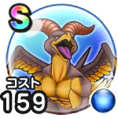

マッドファルコン
宝の地図メダパニこころ最大コスト+4スキルの体技ダメージ+5%ブレスダメージ+5%ドルマ属性ダメージ+12%混乱成功率+20%【魔界】ちから+10【魔界】きようさ+10 / 9.0点
くわしい特徴
【ランク特殊効果】 メダパニこころ最大コスト+4スキルの体技ダメージ+5%ブレスダメージ+5%ドルマ属性ダメージ+12%混乱成功率+20%【魔界】ちから+10【魔界】きようさ+10

宝の地図メダパニこころ最大コスト+4スキルの体技ダメージ+5%ブレスダメージ+5%ドルマ属性ダメージ+12%混乱成功率+20%【魔界】ちから+10【魔界】きようさ+10 / 9.0点
【ランク特殊効果】 メダパニこころ最大コスト+4スキルの体技ダメージ+5%ブレスダメージ+5%ドルマ属性ダメージ+12%混乱成功率+20%【魔界】ちから+10【魔界】きようさ+10